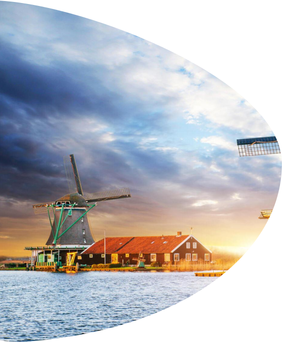
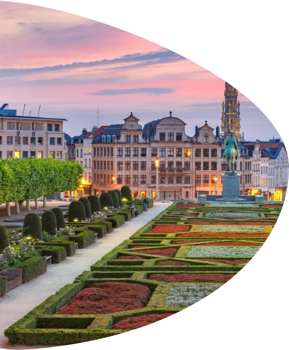
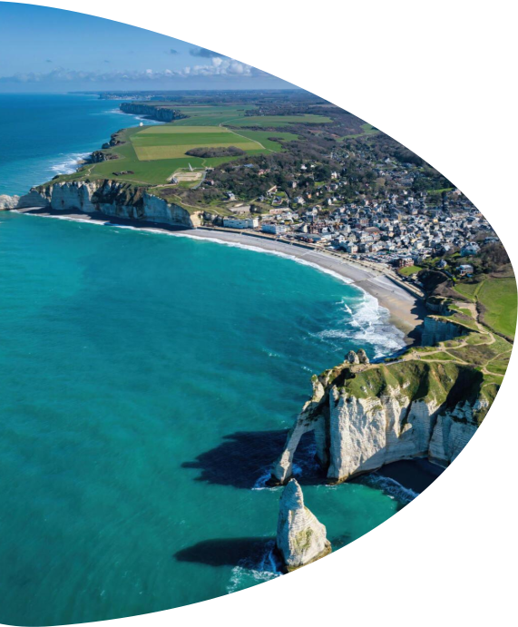
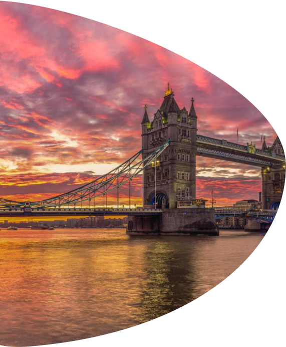

Путешествие на круизном лайнере по Европе – это уникальная возможность исследовать разнообразие культур, истории и природы континента, наслаждаясь при этом комфортом и роскошью круизного отдыха.
Отправившись в круиз по Европе, можно посетить страны Средиземноморья, Северную Европу, Британские острова, Балканы и даже Атлантическое побережье. В данной статье мы расскажем о маршруте по Северной Европе, который может Вас заинтересовать.
ИНФОРМАЦИЯ О ТУРЕ
ВИЗА
ШЕНГЕН
(при необходимости откроем вам визу под круиз)
ТУР АКТУАЛЕН
с 30.01.2024
по
16.04.2024
СТОИМОСТЬ
от 1100€ за 2 взрослых
(сборы и питание включены)
ПРОДОЛЖИТЕЛЬНОСТЬ ТУРА
8
дней
ЛАЙНЕР
MSC Euribia
КАКИЕ СТРАНЫ И ГОРОДА ПОСЕТИТЕ
Роттердам (Нидерланды)
Зеебрюгге ( Бельгия, в 100 км до Брюсселя)
Гавр (Франция, в 200 км до Парижа)
Саутгемптон (Великобритания, в 110 км до Лондона)
Гамбург (Германия)
МАРШРУТ КРУИЗА
1
день
2
день
3
день
4
день
5
день
6
день
7
день
8
день




Роттердам, Нидерланды
Ваш круизный тур по Северной Европе начнется в Роттердаме, городе современного великолепия и архитектурных чудес.
Лайнер отплывает из порта вечером в 20:00. Рекомендуем прибыть в Роттердам заранее (в идеале за 1-2 дня до отплытия), чтобы точно не опоздать на посадку, а также иметь больше времени насладиться необыкновенной атмосферой города. Роттердам – это гармоничное сочетание истории и современности: почти полностью разрушенный во время Второй мировой войны, он восстал из пепла, чтобы стать одной из главных площадок инновационного развития, современной архитектуры и культурного разнообразия.
Стеклянные небоскребы, велосипедные дорожки, мосты, великолепные музеи и живописные каналы — все это создает неповторимый облик Роттердама, делая его городом, который вдохновляет и восхищает своим смелым духом и динамичным обликом.
Что посмотреть:
исторический район Дельфсхавен, мост Эразма, кубические дома, башня Евромачта.
Зеебрюгге, Бельгия
Следующая точка на маршруте, куда доставит Вас круизный лайнер в 7:00 следующего дня, – это Зеебрюгге, называемый также «воротами в Бельгию».
Зеебрюгге – это сказочный город-гавань в Бельгии, где время словно остановилось. Его каналы, мосты и каменные улицы привлекают как культурным наследием, так и уютной атмосферой. Сердцем города является исторический рынок с колокольней и ратушей, а шоколадные лавки и кофейни рядом создают атмосферу расслабленности выходного дня. В полутора часе езды от Зеебрюгге находиться Брюссель, столица Бельгии, которую тоже, несомненно, стоит посетить.
Время отправления круизного лайнера из порта Зеебрюгге - 18.00.
Что посмотреть:
в Зеебрюгге : тематический парк Seafront, Музей Средневековья, главная площадь (Grote Markt).
в Брюсселе: Королевский дворец и сад, музейный квартал, холм искусств с потрясающими видами на Брюссель, церковь Нотр-Дам-де-Виктуар, Гранд Плейс с постройками в стиле барокко, статую-фонтан «Писающий мальчик».
Гавр. Франция
Сегодняшний день Вы проведёте в самой романтичной стране Европы – Франции. Круизный лайнер пришвартуется в Гавре в 9:00. Вы можете исследовать соседние живописные старинные города или отправиться в Париж - он находиться в 2,5 часе езды от Гавра. Туристические операторы предлагают экскурсии с трансфером из/в порт.
Отправление из порта Гавра в 21:00.
Что посмотреть:
в окрестностях Гавра: города Этрета (морские ворота «Тройная Арка» и «Игла Этрета»), Онфлер (узкие средневековые улочки), Руан (город 100 колоколов, историческая столица Нормандии).
в Париже: Эйфелева башня, Нотр Дам, Лувра, дворцовый комплекс Версаль.
Саутгемптон, Великобритания
В четвертый день круизного путешествия Вы сможете посетить еще одну европейскую столицу – Лондон. Круизный лайнер прибудет в порт Саутгемптона в 7:00. Добраться до Лондона Вы можете на автобусе (он приезжает на вокзал Виктория, возле Букингемского дворца), электричке или на трансфере в рамках экскурсионного тура.
Тем, кто предпочтет остаться в Саутгемптон, тоже будет чем заняться и на что посмотреть. Саутгемптон — живописный город на юге Англии, который привлекает своим морским очарованием и богатой историей. Здесь уютные набережные с современными яхтами соседствуют с историческими доками и старинными кораблями. Город служит отправной точкой для многих круизов, а также может похвастаться старинными замками, музеями и прелестными парками.
Лайнер отправляется из порта Саутгемптон в 20:00.
Что посмотреть:
в Саутгемптоне: Дом Тюдоров, мемориал Мэйфлауэр, Оксфорд-стрит с уютными барами, ресторанами, музей Титаника.
в Лондоне: Букингемский Дворец, Вестминстерское Аббатство, Гайд Парк, Лондонский Тауэр, Собор Св Павла, Трафальгарская площадь, Национальная картинная галерея.
День в море
Сегодня день в море. Пока лайнер рассекает волны, у Вас есть отличная возможность изучить богатую инфраструктуру круизного лайнера и заняться чем-нибудь интересным или расслабляющим. На борту лайнера MSC Euribia есть 5 бассейнов, аквапарк, спа, развлекательные зоны, лаунж Carousel с потрясающими панорамными видами, променад с ресторанами и бутиками – галерея Euribia.
Гамбург, Германия
Сегодня приготовьтесь встретить Гамбург, культурную столицу и второй по величине город Германии. Лайнер прибудет в порт Гамбурга в 7 утра, а отплывает в 9 вечера.
Гамбург с первых минут восхищает своей архитектурой, великолепными парками и живописными каналами. Здесь вы найдете оживленные рынки, современные галереи, а также многочисленные мосты, среди которых выделяется знаменитый Кёльнский мост, увешанный любовными замками.
Что посмотреть:
городская Ратуша в ренессансном стиле, историческая улица «Deichstrasse», средневековая церковь Святого Михаила, церковь Святого Петра в неоготическом стиле, Чилихаус (необычное здание, напоминающее по форме лайнер), Гогенцоллернов мост.
День в море
MSC Euribia держит курс на Роттердам. Сегодняшний день вы проведёте в море. Это замечательная возможность для Вас отдохнуть от впечатлений и посетить полюбившееся место на палубе: например, провести день за шоппингом в галерее Euribia, в спа или панорамном лаунже Carousel.
Роттердам, Нидерланды
Утром восьмого дня (в 8:00) круизный лайнер доставит Вас обратно в Роттердам. Нужно освободить каюту и покинуть корабль.
Если у Вас есть время перед обратным рейсом, предлагаем Вам посетить парк музеев (Музей архитектуры, дизайна и digital культуры, KUNSTHALL: Museumpark) или крытый рынок Markthal.